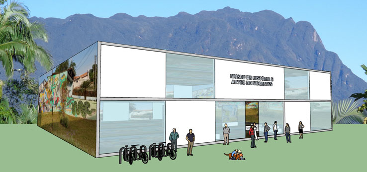
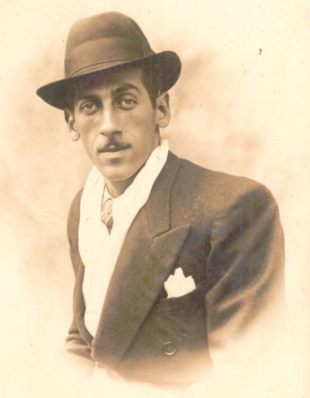
João Nicolau
(Página em construção!)
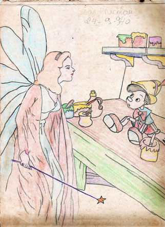 João Nicolau - 24/09/1940 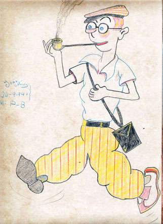 João Nicolau - 24/09/1940 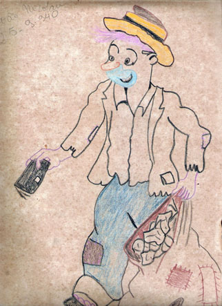 João Nicolau - 25/09/1940 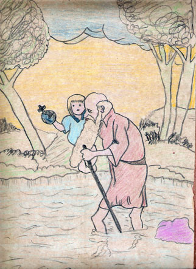 João Nicolau - sem data 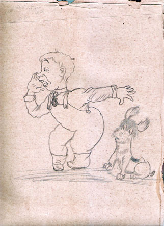 João Nicolau - sem data 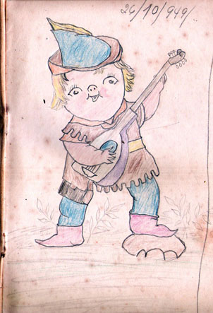 João Nicolau - 26/10/1949 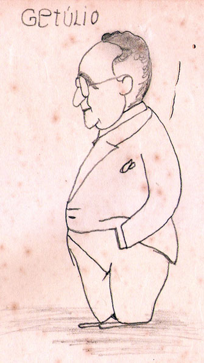 João Nicolau - sem data 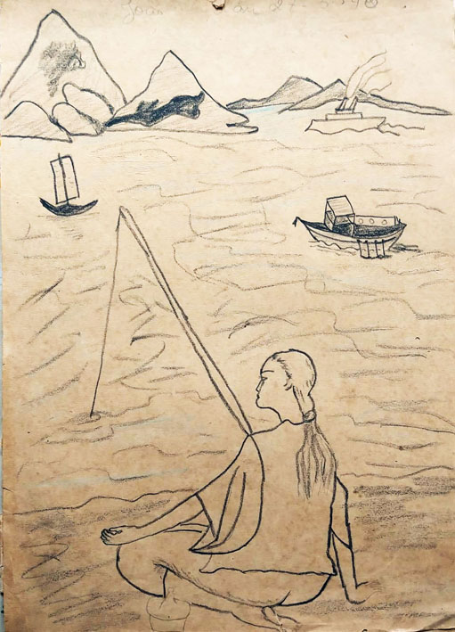 João Nicolau - sem data |
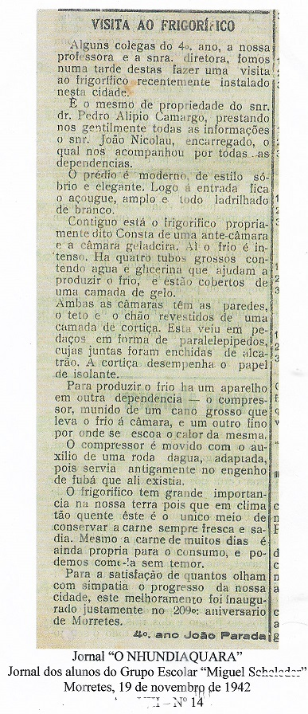